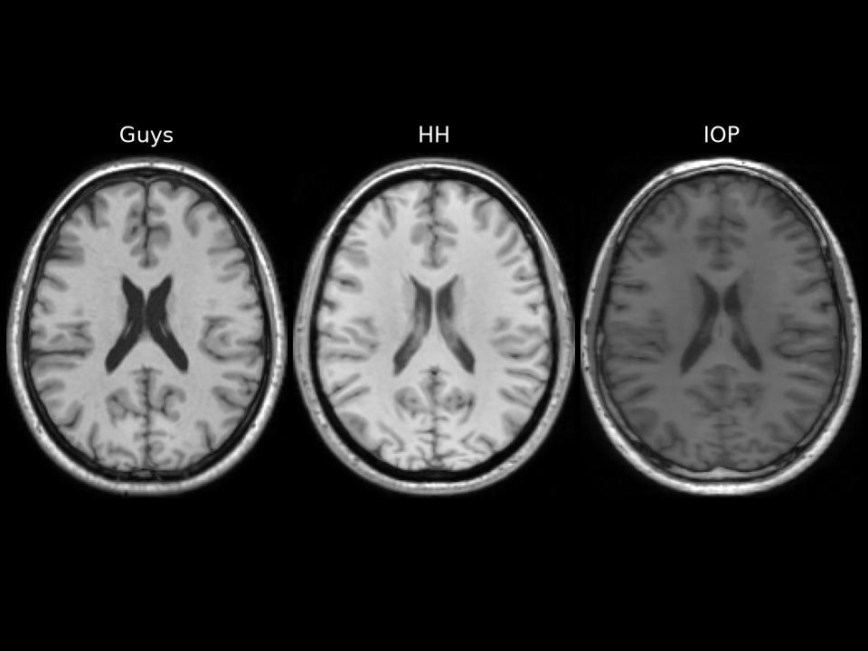

Brain Age Prediction across Hospitals: Domain Shift with ClinicaDL
Independent research project with Clinica and ClinicaDL 2.0 on the IXI dataset (563 T1 MRIs from 3 London hospitals). A 3D DenseNet predicts brain age well on the hospitals it was trained on, but its error is 2 to 3 times higher on a hospital it has never seen. Clinica t1-linear preprocessing removes most of the shift for two hospitals (error from 25 to 8.6 years) and contrast augmentation targets the third. Unsupervised domain adaptation (AdaBN, DANN) hurts when the new hospital's patients differ in age (label shift): the stronger the alignment, the larger the error. An age re-weighted variant (IW-DANN) halves the effect. Results are checked with several seeds and control runs.